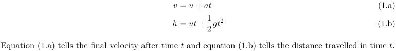
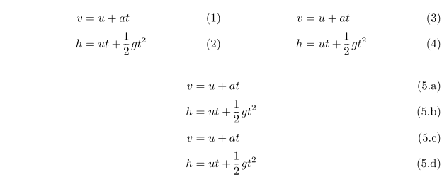

Contents
Summary
The environment \startsubformulas ... \stopsubformulas is used for ...
Settings
Description
Examples
Without and with
-
\setuplayout[scale=0.8,width=13cm] \startplaceformula \startformula \startalign \NC v \NC = u + at \NR[eq:v] \NC h \NC = ut + \frac12 gt^2 \NR[eq:h] \stopalign \stopformula \stopplaceformula Equation~(\in[eq:v]) tells the final velocity after time~$t$ and equation (\in[eq:h]) tells the distance travelled in time~$t$.
-

-
\setuplayout[scale=0.8,width=13cm] \startsubformulas[eq:total] \startplaceformula \startformula \startalign \NC v \NC = u + at \NR[eq:v] \NC h \NC = ut + \frac12 gt^2 \NR[eq:h] \stopalign \stopformula \stopplaceformula \stopsubformulas Equation~(\in[eq:v]) tells the final velocity after time~$t$ and equation (\in[eq:h]) tells the distance travelled in time~$t$.
- 
Difference between \startformulas \startsubformulas
-
\startplaceformula \startformulas \startformula \startalign \NC v \NC = u + at \NR[eq:v] \NC h \NC = ut + \frac12 gt^2 \NR[eq:h] \stopalign \stopformula \startformula \startalign \NC v \NC = u + at \NR[eq:v2] \NC h \NC = ut + \frac12 gt^2 \NR[eq:h2] \stopalign \stopformula \stopformulas \stopplaceformula \startplaceformula \startsubformulas \startformula \startalign \NC v \NC = u + at \NR[eq:v3] \NC h \NC = ut + \frac12 gt^2 \NR[eq:h3] \NC v \NC = u + at \NR[eq:v4] \NC h \NC = ut + \frac12 gt^2 \NR[eq:h4] \stopalign \stopformula \stopsubformulas \stopplaceformula
- 